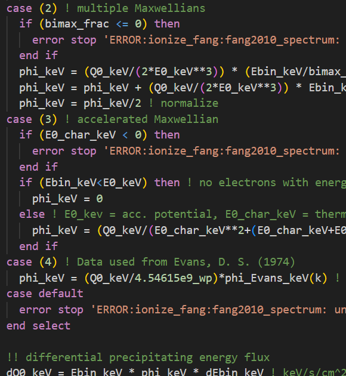

GEMINI
The ionospheric simulations I carry out for my Ph.D. research use the Geospace Environment Model of
Ion-Neutral Interactions, or GEMINI, which is a state-of-the-art 3D, ionospheric model. It was first
introduced by Zettergren & Semeter
in 2012 and formalized in Appendix A by
Zettergren & Snively
in 2015. The 3D version of the model was then developed in 2019 by
Zettergren & Snively
as well.
For those interested in a technical description of the model: GEMINI is a multi-fluid (6 ions + electrons),
quasi-electrostatic model written in FORTRAN 90. Its calculations of particle continuity consisting of chemical production/loss
and photo/impact ionization. Calculations of local densities, plasma flows, and temperatures are treated
self-consistently and the model includes thermal conduction heat flux, collisional heating, thermoelectric
electron heat flux, and inelastic cooling/heating from photoelectrons. This is supplemented with Maxwell's
equations but, at this time, includes no displacement current or magnetic induction effects. With this, the
system is solved through enforcing divergence-free currents, curl-free electric fields, and invoking Ohm's law.
If you want to check out this model, have a look at thier github
repository!
GEMINI Contributions
A proud moment for me was my first pull request to GEMINI's source code. One of the problems I address in my
research is the effect that the energy characteristics of the precipiating electrons have on the auroral arc
system, which cause the auroral light that we know and love. I incorporated more versatile methods of defining
these characteristics using the empirical model introduced by
Fang et al. (2010).
In this context, there are two things to consider when looking at the electrons raining down into our atmosphere:
1) how many there are, also known as their total precipitating energy flux, and 2) what energy do they
have? The latter consideration is outlined by what is known as the differential number flux.
This number flux has thusfar been defined using a form of the Maxwell-Boltzmann distribution which is
characterized by a single energy. Unfortunately, this energy is both what defines the average energy of the
electrons raining down, but it is also, through some definition, it defines the temperature of them at their
source region in outer space.
There is no physical reason for these two energies to be the same, which is why I developed code that allows for
a user-defined differential number flux when running GEMINI simulations.

Aurora GEMINI
GEMINI is a FORTRAN 90 code which has a MATLAB wrapper to handle basic input and output commands surrounding
simulations. I developed a secondary wrapper surrounding all that called
Aurora GEMINI. It handles interfacing
GEMINI with auroral systems in mind.
This toolset is seamlessly integrated into the GEMINI MATLAB wrapper. Some of its main functionalities include
the implementation of the reconstruction and replication techniques, as well as current flux tube generation and
visualization outlined in van Irsel et al.
(2024,
2025). The replication technique allows for the extrapolation of 1D tracked data,
such as that from spacecraft, by using maximal information provided by auroral images. This is required to be
able to use these data for the driving of GEMINI simulations.
Current flux tubes are an invention of mine that provide much improved visualization of current closure through
the atmosphere. They are analogous to magnetic flux tubes in that they simply conserve electric current
throughout them and utilize their divergence-free conditions. They represent invisible electric wires that are
several square kilometers in cross-section, with kiloamps of current passing through them.
Additionally, this toolset allows for:
- - Interfacing with The GLobal airglOW Model (GLOW)
- - Grid plotting over the Northern auroral oval (shown here)
- - Generating PBS and/or SLURM scripts for use in cluster computing
- - Generating, setup, and running of simulation initial condition runs
- - Providing ionization rate altitude profiles using methods by Fang et al.
(2008,
2010)
- - Many other useful tools and functions.
This toolset developed out of my thesis GitHub
repository, and grew into something well
worth sharing with the scientific community. It is a key outcome of my Ph.D. research.